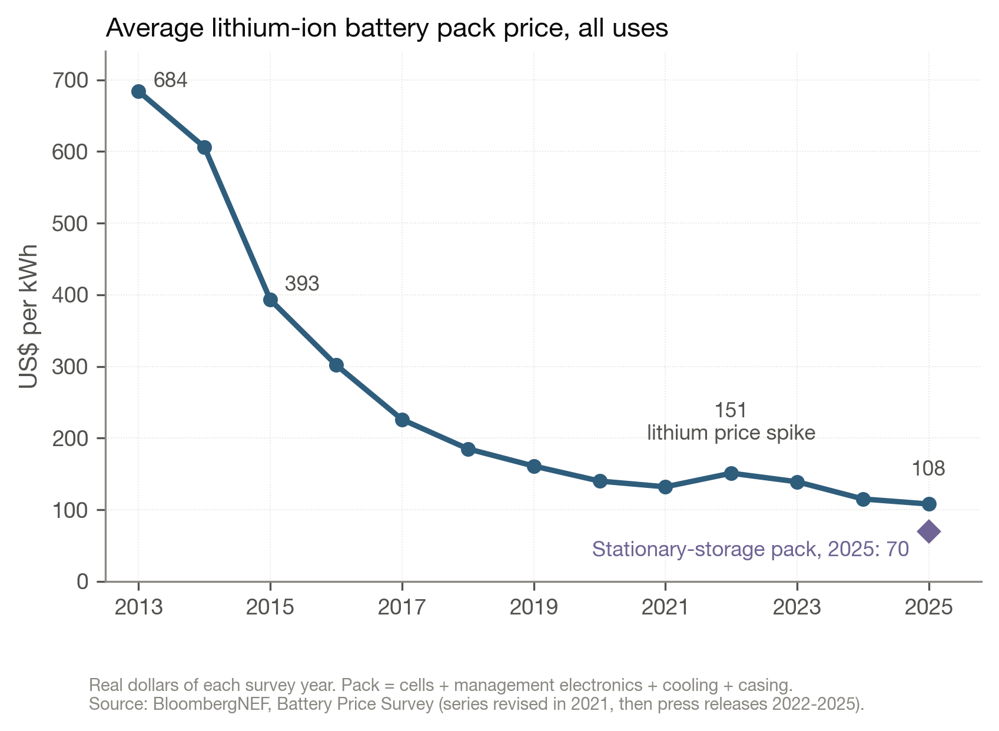
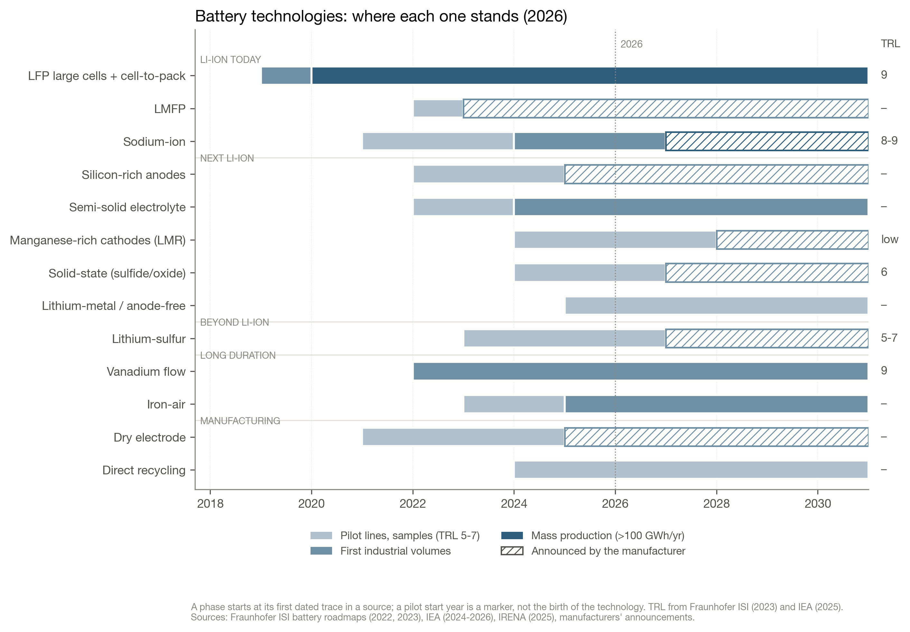
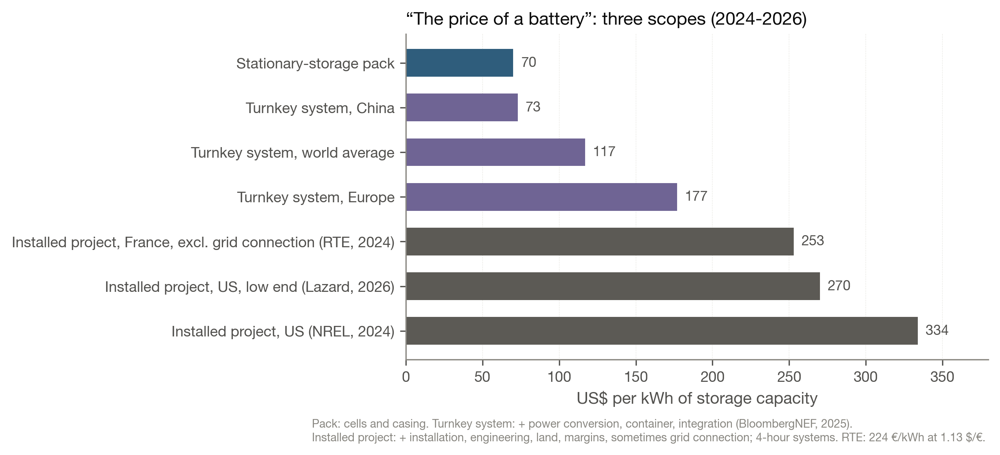
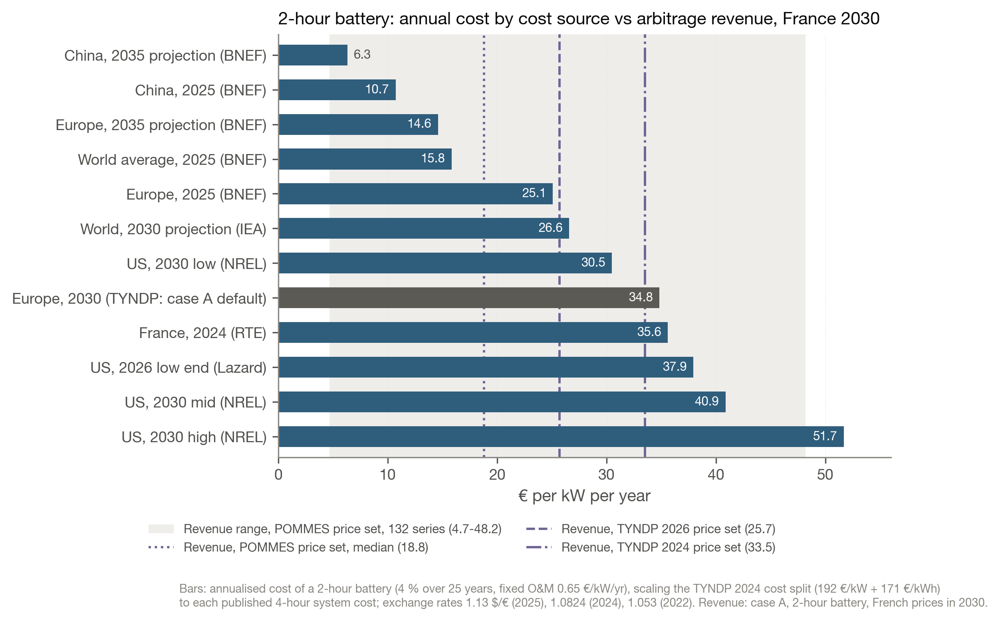

Les batteries : ce qu'elles coûtent, pourquoi leur prix a tant baissé, ce qui vient
Une batterie de 2 h installée en France en 2030 est-elle rentable ? Cellule, pack, système clés en main et projet installé ; LFP et NMC ; puissance, énergie et durée ; maturité. Le prix d'un pack divisé par six depuis 2013 (108 $/kWh en 2025, 70 pour le stockage) et pourquoi : LFP, intégration, échelle, surcapacité chinoise. Sodium-ion, batterie solide, LMR, lithium-soufre, fer-air, batteries à circulation : ce qu'elles changent et où elles en sont. Pourquoi les coûts publiés vont de 70 à plus de 300 $/kWh, et ce que cela change pour les mini-projets A, B, G et N : une batterie de 2 h coûte de 6 à 52 €/kW/an selon la source du coût.
1. La question et la réponse
La question. Une batterie de 2 heures installée en France en 2030 sera-t-elle rentable ? Son coût a beaucoup baissé, on le lit partout ; mais quel chiffre mettre dans un modèle, et que peut-on attendre des nouvelles technologies, sodium-ion, batterie solide, fer-air ?
La réponse, en trois phrases. Le prix moyen d’un pack de batteries lithium-ion a été divisé par six depuis 2013, et le stockage stationnaire est devenu le segment le moins cher : en 2025, 70 $ par kWh pour le pack, 117 $ par kWh pour un système complet en moyenne mondiale, 73 en Chine et 177 en Europe. Selon le coût qu’on retient, une batterie de 2 h coûte de 6 à 52 € par kW et par an, une fourchette qui recouvre presque entièrement celle de ce qu’elle peut gagner en achetant bon marché et en revendant cher : le choix de la source du coût décide du verdict autant que le taux d’actualisation ou la durée de vie. D’ici 2030, aucune nouvelle chimie ne fera baisser ce coût plus que ne le fait déjà la batterie lithium-fer-phosphate (LFP), et le fer-air ouvre une autre catégorie, le stockage de plusieurs jours, plutôt qu’une batterie moins chère.
Le plan. La section 2 pose les notions, la section 3 raconte dix ans de baisse des prix et en donne les causes. La section 4 passe en revue les technologies à venir et leur maturité. La section 5 explique pourquoi les coûts publiés divergent tant. La section 6 dit ce que cela change pour les mini-projets A (batteries), B (voitures pilotées), G (semaine sans vent) et N (data center), la section 7 corrige quelques idées reçues. L’empreinte carbone et l’énergie de fabrication des batteries sont traitées à part (dossier « ACV des batteries »).
2. Les notions
Cellule, pack, système, projet installé. La cellule est l’unité électrochimique : deux électrodes, un séparateur, un électrolyte, un boîtier. Le pack assemble des cellules avec leur électronique de gestion, leur refroidissement et leur coque : c’est ce qu’on met dans une voiture. Un système de stockage stationnaire ajoute au pack l’onduleur (le système de conversion de puissance, qui passe du courant continu de la batterie au courant alternatif du réseau), le conteneur, la gestion de l’énergie et l’intégration : on parle de système clés en main. Le projet installé compte en plus l’installation, l’ingénierie, le terrain, les marges et, selon les sources, le raccordement au réseau. En 2025, ces trois grandeurs valaient environ 70, 117 et plus de 250 $ par kWh (section 5). « Le prix d’une batterie », sans dire lequel, ne veut rien dire.
Cathode, anode, électrolyte. La cathode (l’électrode positive) fixe l’essentiel du coût et de la densité. Deux familles dominent :
- les oxydes de nickel, manganèse et cobalt (NMC, ou NCA avec de l’aluminium), denses mais chers ;
- le lithium-fer-phosphate (LFP), moins dense, moins cher, plus durable et plus sûr, sans nickel ni cobalt.
L’anode (l’électrode négative) est presque toujours en graphite, parfois avec un peu de silicium. L’électrolyte, liquide aujourd’hui, transporte les ions lithium de l’une à l’autre.
Densité, cycles, rendement. La densité d’énergie se donne par masse (Wh/kg) ou par volume (Wh/L) : un pack est moins dense que ses cellules. Elle compte beaucoup pour une voiture ou un avion, peu pour un conteneur posé au sol. Un cycle est une charge suivie d’une décharge ; une cellule LFP de stockage tient plusieurs milliers de cycles avant de perdre 20 % de sa capacité. Le rendement aller-retour est la part de l’électricité stockée qu’on récupère : environ 90 % pour une batterie lithium-ion (0,91 dans le cas A).
Puissance, énergie, durée. Une batterie a deux tailles : sa puissance (MW), le débit auquel elle charge et décharge, et son énergie (MWh), ce qu’elle contient. Leur rapport est sa durée : une batterie de 100 MW et 400 MWh est une batterie de 4 h. Le coût suit les deux : une part par kW (onduleur, raccordement) et une part par kWh (cellules). Dans le cas A, 192 € par kW plus 171 € par kWh : une batterie de 2 h coûte 534 € par kW, une de 4 h 876 € par kW. Doubler la durée ne double donc pas le coût.
Maturité (TRL). Le niveau de maturité technologique va de 1 (principe observé) à 9 (produit éprouvé en fonctionnement réel). TRL 5-6 : prototype et ligne pilote ; TRL 7 : démonstrateur en conditions réelles ; TRL 8-9 : premières ventes, puis produit courant. Un TRL ne dit rien du coût : le sodium-ion est à TRL 8-9 et n’est pas moins cher que le LFP (section 4).
3. Dix ans de baisse des prix
3.1 Ce que montre la courbe

Chaque année, BloombergNEF (BNEF) publie le prix moyen d’un pack, pondéré par les volumes vendus, tous usages confondus. Il est passé d’environ 684 $/kWh en 2013 et 393 en 2015 à 108 en 2025 : divisé par plus de six en douze ans, par plus de trois et demi en dix ans, soit environ 12 % de baisse par an.
La seule hausse date de 2022 (151 $/kWh) : le prix du lithium a été multiplié par neuf entre janvier 2021 et décembre 2022, avant de perdre près de 80 %. La baisse a repris dès 2023.
Derrière la moyenne, les écarts sont grands. En 2025, un pack LFP coûtait 81 $/kWh, un pack NMC 128 ; un pack vendu en Chine 84 $/kWh, en Europe et en Amérique du Nord 40 à 60 % de plus. Le pack destiné au stockage stationnaire était le moins cher de tous, à 70 $/kWh, 45 % de moins qu’un an plus tôt.
3.2 Pourquoi les prix ont baissé
Il n’y a pas eu de rupture chimique : la batterie de 2025 ressemble à celle de 2015. Cinq causes se sont additionnées.
- Les matières. La matière de la cathode fait 40 à 50 % du coût de fabrication d’une cellule NMC, 25 à 30 % d’une cellule LFP. Le prix du lithium a fait monter puis descendre les prix plus que n’importe quel progrès technique entre 2021 et 2023.
- Le passage au LFP. Chimie des bus et des voitures chinoises bon marché il y a dix ans, le LFP équipe en 2025 plus de 55 % des batteries de véhicules électriques vendues dans le monde (81 % en Chine, environ 12 % dans l’Union européenne) et plus de 90 % du stockage stationnaire. Son pack est plus de 40 % moins cher par kWh que le NMC.
- L’intégration. La cellule dans le pack supprime les modules intermédiaires (CATL dès 2019) ; la Blade de BYD (2020) fait de longues cellules LFP qui servent elles-mêmes de structure. Pour le stockage, les cellules prismatiques LFP sont passées de 280 Ah à 500-600 Ah, et un conteneur de 20 pieds de 3,7 à plus de 6 MWh : moins de cellules, de câbles et de conteneurs par MWh. C’est pourquoi le prix des systèmes stationnaires a baissé plus vite que celui des packs de voiture.
- L’échelle et l’apprentissage. Le taux d’apprentissage est la baisse du coût chaque fois que la production cumulée double. Pour les batteries lithium-ion, les études publiées le situent entre 15 et 24 %. Une usine neuve perd aussi une part de sa production en rebut les premières années ; les usines chinoises, plus anciennes et plus grandes, sont plus bas sur cette courbe.
- La surcapacité. Fin 2025, le monde pouvait fabriquer plus de 4 TWh de cellules par an, dont plus de 80 % en Chine ; en 2024, la capacité valait 2,5 fois la demande. La concurrence fait baisser les prix plus vite que les coûts : beaucoup de fabricants de matériau de cathode vendent à perte. Une partie de la baisse récente peut donc s’inverser (section 5).
À 15-24 % par doublement et avec une production qui double tous les deux ou trois ans, on attendrait une baisse de 6 à 11 % par an. Les 12 % observés de 2015 à 2025 viennent de ce que l’apprentissage, le passage au LFP et la surcapacité ont joué ensemble.
3.3 Le stockage stationnaire décolle
Le monde a installé environ 108 GW de batteries stationnaires en 2025, environ 250 GWh, 40 % de plus qu’en 2024. Le système clés en main valait 165 $/kWh en 2024 et 117 $/kWh en 2025 en moyenne mondiale (124 pour une batterie de 2 h, 110 pour une de 4 h), avec un rapport de un à plus de deux entre la Chine (73) et l’Europe (177), et de trois avec les États-Unis (219). En Chine, les appels d’offres de 2025 sont descendus autour de 0,4 à 0,5 yuan par Wh pour des systèmes de 4 h.
4. Les technologies à venir et leur maturité
Les nouvelles technologies visent des choses différentes : le coût, la densité (pour les véhicules), la sécurité, l’indépendance vis-à-vis du lithium, du nickel et du cobalt, ou la durée de stockage. Pour le stockage stationnaire, seul le coût par kWh et par cycle compte vraiment. Les dates de production qui suivent sont celles annoncées par les industriels, et elles ont souvent glissé.

LFP amélioré et LMFP. Le LFP a encore de la marge : remplacer une partie du fer par du manganèse (le LMFP) donne de l’ordre de 15 à 20 % d’énergie en plus avec les mêmes matières bon marché ; un peu de silicium dans l’anode et des électrodes empilées plutôt qu’enroulées font le reste. Le Fraunhofer ISI estime qu’une cellule LFP pourrait ainsi atteindre d’ici 2030 la densité des cellules NMC d’aujourd’hui (plus de 200 Wh/kg). CATL annonce produire du LMFP en série depuis 2023. C’est de l’ingénierie sur une chimie mûre (TRL 8-9), et le principal moteur de baisse jusqu’en 2030.
Sodium-ion. Le sodium remplace le lithium : plus aucune matière critique (ni lithium, ni nickel, ni cobalt, ni graphite naturel, ni cuivre), une meilleure tenue au froid (90 % de la capacité à −20 °C, contre 60-70 % pour le lithium-ion), mais une densité plus faible, 140 à 175 Wh/kg contre 205 pour le meilleur LFP. La technologie est mûre (TRL 8-9) : première voiture en 2024, ligne de 30 GWh chez BYD en 2025, grands contrats pour du stockage en 2026. Mais son avantage de coût dépend du prix du lithium : le carbonate de sodium vaut 100 à 500 $ la tonne, le carbonate de lithium de 6 000 à 83 000 $ selon les années. Avec un lithium bon marché, comme en 2024-2026, le sodium-ion ne bat pas le LFP par kWh. Les fabricants de cellules sodium-ion n’ont encore qu’un peu plus de 1 % de la capacité du lithium-ion.
Anodes au silicium. Le silicium stocke plusieurs fois plus de lithium par gramme que le graphite, mais gonfle en se chargeant. Il entre déjà en petite proportion dans des cellules commerciales ; viser 10 à 20 % de silicium approche 300 Wh/kg. C’est un levier de densité et de recharge rapide, pas de coût.
Électrolyte semi-solide et solide. Remplacer l’électrolyte liquide par un solide (sulfures, oxydes ou polymères) permettrait une anode en lithium métal, donc beaucoup plus de densité, et une meilleure sécurité. Les premières batteries vendues comme « solides » sont des semi-solides, en petite série depuis 2024 sur des voitures haut de gamme. Le tout-solide est au TRL 6 (grande ligne pilote) ; Toyota et BYD visent une production de masse en 2027-2028, et Toyota a déjà repoussé ses dates plusieurs fois. Il coûtera d’abord plus cher : pas d’effet sur le prix du stockage avant 2030.
Lithium métal et cellules « sans anode ». La densité maximale accessible (plus de 400 Wh/kg annoncés), au stade des échantillons. Pour l’aviation légère et les voitures haut de gamme, pas pour le stockage.
Cathodes riches en manganèse (LMR). Une cathode avec peu de nickel, presque pas de cobalt et beaucoup de manganèse. General Motors et LG l’annoncent un tiers plus dense en volume que le meilleur LFP, à coût comparable, et produite en 2028. C’est surtout la voie occidentale vers une batterie de voiture bon marché sans dépendre du LFP chinois.
Lithium-soufre. Très léger (plus de 300 Wh/kg, 550 visés) avec une matière très bon marché, mais 50 à 300 cycles pour les prototypes (TRL 5-7). Pour les drones, l’aviation et les camions ; pas pour le stockage, où la masse ne compte pas.
Fer-air. Le fer rouille en se déchargeant et redevient du fer en se chargeant, l’oxygène venant de l’air. La matière ne coûte presque rien, ce qui permet de stocker 100 heures d’un coup, au prix d’un rendement faible (environ 40 à 50 %). Form Energy livre ses premiers systèmes depuis 2025 et annonce des projets de plusieurs GWh. Le coût visé, 20 $/kWh, n’est pas encore atteint, et l’Agence internationale de l’énergie (AIE) jugeait encore en 2024 le stockage de longue durée « dans l’enfance ». C’est une autre catégorie : stocker plusieurs jours, pas une batterie de 2 h moins chère.
Batteries à circulation. L’énergie est stockée dans deux électrolytes liquides en réservoirs, la puissance dans une pile à part : on dimensionne l’une et l’autre indépendamment. Durées de 5 à 10 heures, des milliers de cycles, pas de risque d’emballement thermique, mais 75 à 85 % de rendement et un coût dominé par le vanadium. La version au vanadium est commerciale (TRL 9 ; 400 MWh à Dalian en Chine en 2022). Le LFP a baissé si vite que leur créneau se déplace vers 8 heures et plus.
Procédés : électrode sèche, recyclage. Déposer la poudre d’électrode sans solvant évite de longs fours de séchage : selon une étude de 2023, la combinaison des meilleurs procédés réduirait de 42 à 57 % l’énergie consommée par une usine de cellules. Le recyclage direct régénère la cathode sans la détruire ; il en est au pilote, et le gisement de batteries en fin de vie restera petit avant 2030.
| Technologie | Ce qu’elle change d’abord | Maturité en 2026 | Effet sur le coût d’un stockage d’ici 2030 |
|---|---|---|---|
| LFP grandes cellules, LMFP | coût, intégration, un peu de densité | production de masse | le moteur principal |
| Sodium-ion | matières critiques, froid | premiers volumes (TRL 8-9) | nul tant que le lithium reste bon marché |
| Anodes au silicium | densité | démarrage industriel | faible |
| Semi-solide, solide | densité, sécurité | petite série ; grand pilote (TRL 6) | aucun, ou plus cher |
| Lithium métal | densité | échantillons | aucun |
| LMR | voiture bon marché sans LFP | production annoncée en 2028 | surtout hors Chine, après 2028 |
| Lithium-soufre | masse | pilote (TRL 5-7) | aucun |
| Fer-air | stockage de plusieurs jours | premières livraisons | une autre catégorie |
| Circulation (vanadium) | durée, cycles | commercial (TRL 9) | marginal |
| Électrode sèche, recyclage | énergie et coût des usines | début de série ; pilote | positif, mal chiffré |
5. Pourquoi les coûts publiés divergent
Un étudiant qui cherche « le coût d’une batterie » trouve des chiffres qui vont de 40 à plus de 350 $/kWh. Ils ne se contredisent pas : ils ne mesurent pas la même chose.

1. Le périmètre. Pack (70 $/kWh), système clés en main (73 à 177), projet installé (250 à 330 et plus) : du simple au quadruple pour la même année. Entre le pack chinois et le projet européen ou américain, il y a la conversion, l’ingénierie, le raccordement, la main-d’œuvre, les marges et les droits de douane, et ce sont ces postes qui baissent le moins.
2. La durée. Un coût « par kWh » dépend de la durée de la batterie : la part par kW (onduleur, raccordement) se répartit sur moins de kWh pour une batterie de 1 h que pour une de 4 h. Un coût par kWh sans la durée ne se compare pas.
3. Le pays et la politique commerciale. Aux États-Unis, les droits de douane sur les batteries chinoises (25 % depuis 2024 pour les véhicules, depuis le 1er janvier 2026 pour les autres) ont presque doublé en un an le bas de fourchette du coût d’un système de 4 h selon la banque Lazard, d’environ 140 à 270 $/kWh. La Chine a de son côté annoncé en 2025 des restrictions à l’exportation de ses procédés de fabrication de cathodes LFP.
4. L’année, la monnaie et le prix contre le coût. Une projection pour 2030 n’est pas un prix constaté en 2025 ; des dollars de 2022 ne sont pas des dollars de 2025 ; et un prix tiré par la surcapacité n’est pas un coût de production.
5. L’auteur. Les projections publiées pour un système de 4 h :
| Source | Périmètre | Point de départ | 2030 | 2035 |
|---|---|---|---|---|
| NREL (2025), États-Unis | projet installé, $ de 2024/kWh | 334 (2024) | 207 / 279 / 354 | 147 / 243 / 339 |
| AIE (2024), monde | coût d’investissement, $ de 2022/kWh | 290 (2022) | 175 | — |
| BNEF (2025) | système clés en main, $/kWh | Chine 73, Europe 177 (2025) | — | Chine 41, Europe 101 |
| RTE (2026), France | projet hors raccordement, € de 2025/kWh | 224 (2024) | pas de baisse centrale d’ici 2050, ± 50 % |
(NREL : hypothèses basse, moyenne et haute.)
Les projections passées ont presque toujours été trop pessimistes pour les packs. En 2017, une étude de référence attendait un pack de voiture à 120 $/kWh en 2030 ; il valait 97 $/kWh dès 2024. En 2023, BNEF projetait un pack moyen à 80 $/kWh en 2030 ; le pack stationnaire est à 70 dès 2025. Le NREL a révisé de 25 % à la baisse en deux ans son propre coût de 2024. Mais les coûts de projets installés en Europe et aux États-Unis, eux, ne suivent pas : le NREL ne descend que de 334 à 279 $/kWh entre 2024 et 2030 dans son hypothèse moyenne, et RTE ne suppose aucune baisse centrale d’ici 2050.
6. Ce que ça change pour les mini-projets

6.1 Cas A : jusqu’où les batteries restent-elles rentables ?
Le cas A compare le revenu d’une batterie qui achète aux heures bon marché et revend aux heures chères à son coût annualisé : l’investissement transformé en annuité (4 % sur 25 ans) plus un coût fixe d’exploitation (voir Financer la transition pour la formule de l’annuité). Pour passer d’un coût publié de système de 4 h à une batterie de 2 h, le cas met à l’échelle la décomposition du TYNDP 2024 (le plan décennal des réseaux européens) : 192 € par kW plus 171 € par kWh.
| Coût de système retenu | € par kW et par an, batterie de 2 h, 4 %, 25 ans |
|---|---|
| Chine 2025 (BNEF) | 10,7 |
| Europe 2035, projection (BNEF) | 14,6 |
| Europe 2025 (BNEF) | 25,1 |
| Monde 2030, projection (AIE) | 26,6 |
| Europe 2030 (TYNDP 2024, valeur par défaut du cas) | 34,8 |
| France 2024 (RTE) | 35,6 |
| États-Unis 2030, hypothèse moyenne (NREL) | 40,9 |
Face à cela, le revenu d’arbitrage d’une batterie de 2 h en 2030 vaut 33,5 € par kW et par an avec les prix du TYNDP 2024, 25,7 avec ceux du TYNDP 2026, et 18,8 en médiane avec les 132 séries de prix calculées par POMMES (de 4,7 à 48,2 selon le prix du gaz et l’année météo). Trois choses à regarder :
- Le verdict change avec la source du coût. Au coût du TYNDP (34,8), ni les séries centrales des deux jeux TYNDP ni la médiane POMMES ne couvrent le coût ; au prix européen constaté en 2025 (25,1), les deux jeux TYNDP passent et un quart des séries POMMES aussi. Le coût que le TYNDP retient pour 2030 est au-dessus du prix européen de 2025 : il vaut la peine de le dire dans une restitution.
- Le taux et la durée de vie comptent autant. À 7 % sur 25 ans, la même batterie coûte 46,5 € par kW et par an ; sur 15 ans à 4 %, 48,7.
- Le n-ième GW gagne moins. Quand toutes les batteries font la même chose, elles écrasent l’écart de prix dont elles vivent : une flotte de 10 GW gagne 29 à 36 % de moins par kW qu’une batterie seule. Si le coût européen baisse comme le projette BNEF (14,6 en 2035), la question n’est plus le coût d’une batterie mais la profondeur du marché.
Deux réserves en restitution : on ne sait pas si le « clés en main » de BNEF comprend le raccordement, et le prix chinois n’est pas accessible tel quel à un projet européen. Une question de mini-projet : combien de GW de batteries sont rentables si l’on remplace le coût du TYNDP par le prix européen de 2025, et que reste-t-il sans les quelques heures au plafond de prix ?
6.2 Cas B : les voitures pilotées
Le cas B ne compte pas l’usure des batteries. Pour une recharge pilotée, qui déplace seulement l’heure de charge, ce n’est pas grave : la batterie aurait été chargée de toute façon. Pour une voiture qui rend de l’électricité au réseau, c’est décisif. Un pack de voiture coûtait 99 $/kWh en 2025, environ 88 €/kWh ; s’il tient 2 400 à 6 250 cycles à 80 % de profondeur de décharge avant de perdre 20 % de sa capacité, chaque MWh rendu use pour 18 à 46 € de batterie. C’est l’ordre de grandeur de l’écart entre heures creuses et heures pleines. Une question de mini-projet : que reste-t-il du gain de la décharge vers le réseau si l’on fait payer l’usure à chaque MWh rendu ?
6.3 Cas G : une semaine sans vent
Le cas G cherche ce qui couvre une semaine d’hiver sans vent dans une Europe presque 100 % renouvelable. Sa réponse : pas les batteries. Multiplier par quatre les batteries prévues ne fait passer le délestage que de 107,7 à 77,3 TWh par an (moyenne de trois années météo), quand doubler l’éolien et le solaire le ramène à 11,2 TWh. La raison est le coût par kWh : dans le modèle, la pire semaine laisse environ 20 TWh de demande non servie. Les stocker au prix moyen mondial d’un système de 2025 (117 $/kWh) coûterait plus de 2 000 milliards de dollars, pour une semaine par an. Même au coût visé par Form Energy pour le fer-air, 20 $/kWh, ce serait encore 400 milliards. Une question de mini-projet : à quel coût par kWh un stockage de 100 heures remplacerait-il une partie du surdimensionnement des renouvelables ?
6.4 Cas N : un data center sur le réseau
Le cas N chiffre à part une batterie dédiée de 25 MW et 50 MWh, à 8 % sur 25 ans : environ 1,25 M€ par an au coût du TYNDP, 0,9 M€ au prix européen de 2025, 0,4 M€ au prix chinois. L’arbitrage seul lui rapporte 0,6 à 1,4 M€ par an selon la série de prix. Au coût du TYNDP, la batterie se paie rarement par l’arbitrage seul ; au prix européen constaté, dans une partie des séries. Pour la forme des prix qui fait ces revenus, voir Le prix de l’électricité.
7. Quelques idées reçues
- « Une batterie coûte 100 $/kWh. » C’est l’ordre de
grandeur d’un pack en
- Un système clés en main européen coûte près du double, un projet installé plus du double encore.
- « Une batterie de 4 h coûte deux fois plus qu’une batterie de 2 h. » Non : une partie du coût est par kW. Avec la décomposition du cas A, 876 € par kW pour 4 h contre 534 pour 2 h, soit 1,6 fois plus.
- « La batterie solide va faire baisser les prix. » Elle vise la densité et la sécurité, elle est au stade du grand pilote, et elle coûtera d’abord plus cher.
- « Le sodium-ion sera moins cher que le lithium-ion. » Seulement si le lithium redevient cher. Son vrai atout est de ne dépendre d’aucune matière critique.
- « Le prix du lithium fait le prix de la batterie. » Moins qu’on ne le croit : entre avril 2023 et avril 2024, le lithium a baissé de 36 % et les packs de 14 %, parce que les contrats de long terme amortissent les à-coups. Le pic de 2022 a tout de même suffi à faire monter les prix d’une année.
- « Les projections de baisse sont trop optimistes. » Pour les packs, c’est l’inverse : elles ont presque toujours été battues. Pour les projets installés en Europe et aux États-Unis, la prudence se justifie.
8. Ce qu’il faut retenir
Le prix des packs a été divisé par six depuis 2013, sans rupture chimique : le LFP, l’intégration, l’échelle et une surcapacité chinoise qui fait baisser les prix plus vite que les coûts.
Le stockage stationnaire est devenu le segment le moins cher : 70 $/kWh le pack, 117 $/kWh le système clés en main en moyenne mondiale en 2025, du simple au double et demi entre la Chine et l’Europe.
Un coût de batterie se lit avec son périmètre, sa durée, son pays et son année. Ce sont les postes hors cellules (conversion, ingénierie, raccordement, douanes) qui baissent le moins.
D’ici 2030, la baisse viendra encore du LFP. Sodium-ion, solide, lithium métal ou soufre visent la densité, la sécurité ou l’indépendance en matières ; le fer-air ouvre le stockage de plusieurs jours.
Pour un mini-projet, la source du coût change le verdict autant que le taux et la durée de vie : faites varier les trois avant de conclure.
9. Sources
- BloombergNEF, Lithium-Ion Battery Price Survey, communiqués de 2022 à 2025, https://about.bnef.com/insights/clean-transport/lithium-ion-battery-pack-prices-fall-to-108-per-kilowatt-hour-despite-rising-metal-prices-bloombergnef/.
- BloombergNEF, Energy Storage System Cost Survey 2024 et 2025, résumés par Energy-Storage.News, https://www.energy-storage.news/battery-storage-system-prices-continue-to-fall-sharply-bnef-and-ember-reports-find/.
- AIE, Batteries and Secure Energy Transitions, 2024, https://iea.blob.core.windows.net/assets/cb39c1bf-d2b3-446d-8c35-aae6b1f3a4a0/BatteriesandSecureEnergyTransitions.pdf.
- AIE, Global EV Outlook 2025 et 2026, chapitres sur les batteries, https://iea.blob.core.windows.net/assets/857aa690-2a43-453f-9f12-147cc8f0a1dd/GlobalEVOutlook2026.pdf.
- Fraunhofer ISI, Lithium-Ion Battery Roadmap (2023), Alternative Battery Technologies Roadmap 2030+ (2023) et Solid-State Battery Roadmap 2035+ (2022), https://www.isi.fraunhofer.de/content/dam/isi/dokumente/cct/2023/abt-roadmap.pdf.
- IRENA, Sodium-ion batteries, Technology brief, 2025, https://www.irena.org/-/media/Files/IRENA/Agency/Publication/2025/Nov/IRENA_TEC_Sodium-ion_batteries_2025.pdf.
- NREL (Cole, Ramasamy, Turan), Cost Projections for Utility-Scale Battery Storage: 2025 Update, NREL/TP-6A40-93281, https://www.nrel.gov/docs/fy25osti/93281.pdf.
- Lazard, Levelized Cost of Energy+, juin 2025 et juillet 2026, https://www.lazard.com/research-insights/levelized-cost-of-energyplus/.
- RTE, actualisation des Futurs énergétiques 2050, annexes de
la consultation,
- Agence danoise de l’énergie, Technology Data for Energy Storage, 2025, https://ens.dk/media/6588.
- ENTSO-E et ENTSOG, TYNDP 2024 Scenarios, rapport de méthode, 2024.
- Degen F. et al., « Energy consumption of current and future production of lithium-ion and post lithium-ion battery cells », Nature Energy 8 (2023), https://doi.org/10.1038/s41560-023-01355-z.
- Kittner N., Lill F., Kammen D., « Energy storage deployment and innovation for the clean energy transition », Nature Energy 2 (2017) 17125, https://doi.org/10.1038/nenergy.2017.125.
- Mauler L. et al., « Battery cost forecasting: a review of methods and results with an outlook to 2050 », Energy Environ. Sci. 14 (2021), https://doi.org/10.1039/d1ee01530c.
- Schmidt O. et al., « The future cost of electrical energy storage based on experience rates », Nature Energy 2 (2017) 17110, https://doi.org/10.1038/nenergy.2017.110.
- Ziegler M., Trancik J., « Re-examining rates of lithium-ion battery technology improvement and cost decline », Energy Environ. Sci. 14 (2021), https://doi.org/10.1039/d0ee02681f.
- Mini-projets A, B, G et N du cours : dépôt
pommes-case-studies, README de chaque cas (revenus, délestages et annuités cités en section 6). - Industriels (CATL, BYD, Toyota, General Motors et LG Energy Solution, Form Energy, QuantumScape, Tesla) : communiqués et presse spécialisée, 2019 à 2026.
10. Vidéos, billets et posts sur le même sujet
Des billets de blog et des posts LinkedIn de l’auteur reprennent des points de cette note.
- Passer l’hiver : centrales de 10 heures ou batteries de 2 heures ? L’Allemagne et la Belgique (post LinkedIn repris sur le blog, avec figures et sources ; le post sur LinkedIn) : pourquoi une semaine d’hiver sans vent demande des moyens capables de tenir des jours, et ce que peuvent des batteries de 2 heures (cas A et G).
- L’Autriche, le solaire de midi et la flexibilité déjà payée (post LinkedIn repris sur le blog, avec figures et sources ; le post sur LinkedIn) : des prix presque nuls à midi et élevés le soir, et ce que vaut la flexibilité des batteries et des voitures électriques (cas A et B).
- Des milliers de petites STEP possibles en Europe : où, combien, et ce que le karst change (billet de blog, 35 min) : l’autre façon de stocker l’électricité, en pompant de l’eau, et ses ordres de grandeur (cas G).
Télécharger la version PDF (les liens y restent actifs).